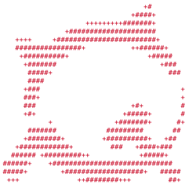

Turn a Bobcat Miner 300 (G290 or G295) into a Reticulum LoRa node from your browser, over USB. Choose the system image, set up the node, and flash it. Everything happens on your computer; nothing you type is uploaded. Needs Chrome or Edge. Documentation.
The server must allow cross-origin requests (CORS), or the browser refuses to read it. GitHub release links do not. The image is read in your browser; nothing is uploaded.
Everything here is optional. With nothing set, the unit installs with defaults over a network cable. Every setting is described in the settings reference.
Saved in a cookie for a year. Passwords stay out unless you tick the box.
For writing an SD card by hand, or to keep. The file contains secrets if you set a passphrase; it stays on your computer. The preview hides passphrases; the downloaded and copied file has them.
SD card route: write bobcat-g295-flasher.img.xz from the releases to a card, copy this file onto the card's BOBCFG drive keeping the exact name, boot the Bobcat from the card, and when the LEDs flash quickly power off, remove the card and power on again.
Photos, button positions and troubleshooting
A unit that still has the factory firmware shows up without a name (Maskrom). That is fine: the page sends it a loader first. A unit that has run this system before shows as "USB download gadget".
More in how to tell it worked.
/etc/udev/rules.d/99-bobcat.rules:
SUBSYSTEM=="usb", ATTR{idVendor}=="2207", MODE="0666"
SUBSYSTEM=="usb", ATTR{idVendor}=="18d1", ATTR{idProduct}=="4d00", MODE="0666"Available once an image is chosen in step 1.
The board restarts into fastboot (18d1:4d00). Press Connect and choose it. A board that is already in fastboot can be connected here directly. The flash takes a few minutes; keep the cable in and this tab open. How the flashing works.
Nothing yet.